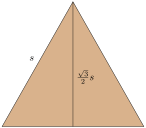
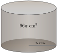

Section 1.4 Equations, Inequalities, and Solutions
This section introduces equations and inequalities, and what it means for a number to be a solution.
Subsection 1.4.1 Equations, Inequalities, and Solutions
An equation is two algebraic expressions with an equal sign (\(=\)) between them. The expression on either side can be relatively simple or more complicated:
A simple equation:
\begin{equation*}
x+1=2
\end{equation*}
A more complicated equation:
\begin{equation*}
\left(x^2+y^2-1\right)^3=x^2y^3
\end{equation*}
An inequality is similar to an equation, but the sign is one of the five inequality symbols (\(\lt\text{,}\) \(\leq\text{,}\) \(\gt\text{,}\) \(\geq\text{,}\) and \(\neq\)).
A simple inequality:
\begin{equation*}
x\geq15
\end{equation*}
A more complicated inequality:
\begin{equation*}
x^2+y^2\lt1
\end{equation*}
Equations (and inequalities) arise naturally from real-world math problems.
Example 1.4.2.
A parking meter needs $2.50 for one hour. You already fed the meter some quarters, nickels, and dimes, and it says that you’ve inserted $1.85 so far. How much more do you need to pay? Never mind if you already know the answer to that question. There is an equation hidden in this story, and we will write it down.
Since the question asks “How much more do you need to pay?”, let’s use the variable \(x\) to represent that amount. We’ve already paid $1.85, so that amount plus \(x\) should be all that we need, which is $2.50. So the equation in this story is:
\begin{equation*}
1.85+x=2.50
\end{equation*}
Don’t worry yet about what \(x\) must equal. For now the important thing is to be able to write down that equation.
Example 1.4.3.
An equilateral triangle is a triangle where all three sides are equal. When an equilateral triangle has side length \(s\text{,}\) it’s “altitude” is \(\frac{\sqrt{3}}{2}s\text{.}\)

Suppose the altitude needs to be at least \(5\) units tall. What inequality does that give us?
The altitude is \(\frac{\sqrt{3}}{2}s\) long, and “at least” means the inequality symbol \(\geq\text{.}\) So we have
\begin{equation*}
\frac{\sqrt{3}}{2}s\geq5
\end{equation*}
Do not worry about what \(s\) might equal. For now, the important task to be comfortable with is writing down the inequality.
The simplest equations and inequalities have only numbers and no variables. When this happens, the equation is either true or false. The following equations and inequalities are true:
\begin{align*}
1+1\amp=2\amp{-4}\amp={-4}\amp2\amp\gt1\amp{-2}\amp\lt{-1}\amp3\amp\ge3
\end{align*}
The following equations and inequalities are false:
\begin{align*}
2+2\amp=2\amp{-4}\amp=4\amp2\amp\lt1\amp{-2}\amp\ge{-1}\amp0\cdot1\neq0\cdot2
\end{align*}
With the equation in Example 2, if we substitute \(0.65\) in for \(x\text{,}\) the resulting equation is true.
\begin{equation*}
1.85+0.65\confirm{=}2.50
\end{equation*}
If we substitute any other number in for \(x\text{,}\) the resulting equation is false. This shows us what it means to be a solution to an equation.
Definition 1.4.4. Solution.
When an equation (or inequality) has one variable, a solution is any number that you could substitute for the variable that would result in a true equation (or inequality).
A solution to an equation (or inequality) is said to “satisfy” the equation (or inequality). For example, \(0.65\) satisfies the equation \(1.85+0.65=2.50\text{.}\)
Example 1.4.5. A Solution.
Consider the equation \(y+2=3\text{.}\) If we substitute \(1\) in for \(y\) and then simplify:
\begin{align*}
y+2\amp=3\\
\substitute{1}+2\amp\wonder{=}3\\
3\amp\confirm{=}3
\end{align*}
we get a true equation. So we say that \(1\) is a solution to \(y+2=3\text{.}\) Notice that we used a question mark at first because we are unsure if the equation is true or false until the end. When it was clear we had a true equation, we certified this with a checkmark.
If replacing a variable with a value makes a false equation or inequality, that number is not a solution.
Example 1.4.6. Not a Solution.
Consider the inequality \(x+4\gt 5\text{.}\) If we substitute \(0\) in for \(x\) and then simplify:
\begin{align*}
x+4\amp\gt 5\\
\substitute{0}+4\amp\wonder{\gt}5\\
4\amp\reject{\gt}5
\end{align*}
we get a false inequality. So we say that \(0\) is not a solution to \(x+4\gt 5\text{.}\) Notice that we used a question mark again because at first, we are unsure if the inequality is true or false. Once it was clearly false, we made a little note (“no”) to acknowledge that we know this is false.
Subsection 1.4.2 Checking Possible Solutions
Given an equation or an inequality, checking whether or not some number is a solution is just a matter of substituting that number in for the variable. Then with some arithmetic to simplify things, you determine if the equation/inequality is true or false.
Example 1.4.7.
Is \(8\) a solution to \(x^2-5x=\sqrt{2x}+20\text{?}\)
To find out, substitute \(8\) in for \(x\) and see what happens.
\begin{align*}
x^2-5x\amp=\sqrt{2x}+20\\
\substitute{8}^2-5(\substitute{8})\amp\wonder{=}\sqrt{2(\substitute{8})}+20\\
\highlight{64}-5(8)\amp\wonder{=}\sqrt{\highlight{16}}+20\\
64-\highlight{40}\amp\wonder{=}\highlight{4}+20\\
\highlight{24}\amp\confirm{=}\highlight{24}
\end{align*}
So yes, \(8\) is a solution to \(x^2-5x=\sqrt{2x}+20\text{.}\)
Example 1.4.8.
Is \(-5\) a solution to \(\sqrt{169-y^2}=y^2-2y\text{?}\)
To find out, substitute \(-5\) in for \(y\) and see what happens.
\begin{align*}
\sqrt{169-y^2}\amp=y^2-2y\\
\sqrt{169-\substitute{(-5)}^2}\amp\wonder{=}\substitute{(-5)}^2-2(\substitute{-5})\\
\sqrt{169-\highlight{25}}\amp\wonder{=}\highlight{25}-2(-5)\\
\sqrt{\highlight{144}}\amp\wonder{=}25-(\highlight{-10})\\
\highlight{12}\amp\reject{=}\highlight{35}
\end{align*}
So no, \(-5\) is not a solution to \(\sqrt{169-y^2}=y^2-2y\text{.}\)
What about the inequality \(\sqrt{169-y^2}\leq y^2-2y\text{?}\) Is \(-5\) a solution to that? Yes, because substituting \(-5\) in for \(y\) would lead to
\begin{equation*}
12\leq35\text{,}
\end{equation*}
which is true.
Checkpoint 1.4.9.
Is \(-3\) a solution to the equation \(2x-3=5-(4+x)\text{?}\)
| \(2x-3\) | \({}={}\) | \(5-(4+x)\) |
| \({}\wonder{=}{}\) |
Explanation.
We have to substitute \(-3\) in for \(x\) and simplify each side:
\begin{equation*}
\begin{aligned}
2x-3\amp=5-(4+x)\\
2(\substitute{-3})-3\amp\wonder{=}5-(4+(\substitute{-3}))\\
\highlight{-6}-3\amp\wonder{=} 5-(\highlight{1})\\
\highlight{-9}\amp\reject{=}\highlight{4}
\end{aligned}
\end{equation*}
Since \(-9=4\) is false, \(-3\) is not a solution to this equation.
Checkpoint 1.4.10.
Is \(2\) a solution to the inequality \(\frac{z+3}{z-1}\lt\sqrt{18z}\text{?}\)
| \(\dfrac{z+3}{z-1}\) | \({}\lt{}\) | \(\sqrt{18z}\) |
| \({}\wonder{\lt}{}\) |
Explanation.
We have to substitute \(2\) in for \(z\) and simplify each side:
\begin{equation*}
\begin{aligned}
\frac{z+3}{z-1}\amp\lt\sqrt{18z}\\
\frac{\substitute{2}+3}{\substitute{2}-1}\amp\wonder{\lt}\sqrt{18(\substitute{2})}\\
\frac{\highlight{5}}{\highlight{1}}\amp\wonder{\lt}\sqrt{\highlight{36}}\\
\highlight{5}\amp\confirm{\lt}\highlight{6}
\end{aligned}
\end{equation*}
Since \(5\lt6\) is true, \(2\) is indeed a solution to this inequality.
Checkpoint 1.4.11.
Is \(-3\) a solution to the equation \(x^2+x+1=\frac{3x+2}{x+2}\text{?}\)
| \(x^2+x+1\) | \({}={}\) | \(\dfrac{3x+2}{x+2}\) |
| \({}\wonder{=}{}\) |
Explanation.
We have to substitute \(-3\) in for \(x\) and simplify each side:
\begin{equation*}
\begin{aligned}
x^2+x+1\amp=\frac{3x+2}{x+2}\\
(\substitute{-3})^2+(\substitute{-3})+1\amp\wonder{=}\frac{3(\substitute{-3})+2}{\substitute{-3}+2}\\
\highlight{9}-3+1\amp\wonder{=}\frac{\highlight{-9}+2}{\highlight{-1}}\\
\highlight{6}+1\amp\wonder{=}\frac{\highlight{-7}}{-1}\\
\highlight{7}\amp\confirm{=}\highlight{7}
\end{aligned}
\end{equation*}
Since \(7=7\) is true, \(-3\) is indeed a solution to this equation.
Subsection 1.4.3 More Applications
Here are a few more examples like Examples 2–3 where a real-world scenario leads to an equation. This time, we also try some potential solutions.
Example 1.4.12. Cylinder Volume.
The formula for a cylinder’s volume is \(V=\pi r^2h\text{,}\) where \(V\) is the volume, \(r\) is the base radius, and \(h\) is the height. And \(\pi\) is a number that is about \(3.14\text{.}\) If we know the volume of a cylinder is 96\(\pi\) cm3 and if we also know its radius is 4 cm, then we can substitute these numbers in for \(V\) and \(r\) and we get an equation:
\begin{equation*}
96\pi=16\pi h
\end{equation*}

(a)
Is is possible that the cylinder is 4 cm high? In other words, is \(4\) a solution to \(96\pi=16\pi h\text{?}\) We will substitute \(4\) in for \(h\) to check:
\begin{align*}
96\pi\amp=16\pi h\\
96\pi\amp\wonder{=}16\pi \cdot\substitute{4}\\
96\pi\amp\reject{=}\highlight{64}\pi
\end{align*}
Since \(96\pi=64\pi\) is false, \(4\) is not a solution and the height cannot be 4 cm.
(b)
Is is possible that the cylinder is 6 cm high? We will try \(h=6\text{:}\)
\begin{align*}
96\pi\amp=16\pi h\\
96\pi\amp\wonder{=}16\pi \cdot\substitute{6}\\
96\pi\amp\confirm{=}\highlight{96}\pi
\end{align*}
When \(h=6\text{,}\) the equation \(96\pi=16\pi h\) is true. This tells us that the height could be 6 cm.
Example 1.4.13.
Jaylen has budgeted a maximum of \(\$300\) to repair some leaky pipes. The total cost of the repair can be modeled by \(89+110(h-0.25)\text{,}\) where \(\$89\) is the initial cost and \(\$110\) is the hourly labor charge after the first quarter hour. Since the total cost needs to be at most \(\$300\text{,}\) it means we have the inequality \(89+110(h-0.25)\le 300\text{.}\) Is \(2\) a solution? Does Jaylen have enough money to cover two hours of plumbing labor?
We will substitute \(2\) in for \(h\) to check:
\begin{align*}
89+110(h-0.25)\amp\le 300\\
89+110(\substitute{2}-0.25)\amp\wonder{\le} 300\\
89+110(\highlight{1.75})\amp\wonder{\le} 300\\
89+\highlight{192.5}\amp\wonder{\le} 300\\
\highlight{281.5}\amp\confirm{\le} 300
\end{align*}
So we find that \(2\) is indeed a solution to this inequality. In context, this means that Jaylen will stay within their budget if there are only \(2\) hours of labor.
Subsection 1.4.4 Linear Equations
A linear expression in one variable is an expression in the form \(ax+b\text{,}\) where \(a\) and \(b\) are numbers, \(a\neq0\text{,}\) and \(x\) is a variable. For example, \(2x+1\) and \(3y+\frac{1}{2}\) are linear expressions in one variable.
The following examples are a little harder to identify as linear expressions in one variable, but they are.
- \(2x\)
- This is linear, with \(b=0\text{.}\)
- \(y+3\)
- This is linear, with \(a=1\text{.}\)
- \(17-q\)
- This is linear, with \(a=-1\text{,}\) \(b=17\) and the two terms are written in reverse order.
- \(2.1t+3+8t-1.4\)
- This is linear because it simplifies to \(10.1t+1.6\text{.}\)
Definition 1.4.14. Linear Equation and Linear Inequality.
A linear equation in one variable is any equation where one side is a linear expression in that variable, and the other side is either a constant number, or is another linear expression in that variable. A linear inequality in one variable is defined similarly, just with an inequality symbol instead of an equal sign.
The following are each an example of a linear equation in one variable:
\begin{align*}
4-y\amp=5 \amp 4-z\amp=5z \amp 0\amp=\frac{1}{2}p
\end{align*}
\begin{align*}
3-2(q+2)\amp=5q \amp \sqrt{2} r+3\amp=10 \amp 5\amp=\frac{s}{2}+3
\end{align*}
Note that \(r\) is outside the square root symbol.
In a linear equation in one variable, the variable should not have an exponent and the variable cannot be inside a root symbol (square root, cube root, etc.), a denominator, or absolute value bars.
1
other than \(1\) or \(0\)
The following are not linear equations in one variable:
- \(1+2=3\)
- There is no variable.
- \(4-2y^2=5\)
- The exponent on \(y\) is \(2\text{.}\)
- \(\sqrt{2r}+3=10\)
- The variable \(r\) is inside the square root.
- \(5=\frac{2}{s}+3\)
- The variable \(s\) is in a denominator.
Linear equations (and inequalities) are special and these are the only kinds of equations (and inequalities) that are covered in the rest of Part I. You don’t need to know this for the exercises in this section, but a linear equation can only ever have exactly one solution, no solutions at all, or can be such that every number is a solution. For example, it is not possible for a linear equation to have exactly two solutions. There is a similar (but more complicated) story for linear inequalities. All of these details about linear equations (and inequalities) are covered later in Chapter 2.
Reading Questions 1.4.5 Reading Questions
1.
Explain why the equation from Example 2 is a linear equation.
2.
Give your own example of an equation in one variable that is not a linear equation.
3.
Do you believe it is possible for an equation to have more than one solution? Do you believe it is possible for an inequality to have more than one solution?
Exercises 1.4.6 Exercises
Prerequisite/Review Skills
These exercises are intended for students who are rusty with the idea of a root and/or absolute value. If you feel comfortable, proceed to Skills Practice.
Square Root.
Find the square root.
1.
\(\sqrt{{0}}\)
2.
\(\sqrt{{1}}\)
3.
\(\sqrt{{{\frac{4}{81}}}}\)
4.
\(\sqrt{{{\frac{9}{64}}}}\)
Absolute Value.
Find the absolute value.
5.
\(\left\lvert{45}\right\rvert\)
6.
\(\left\lvert{56}\right\rvert\)
7.
\(\left\lvert{-{67}}\right\rvert\)
8.
\(\left\lvert{-{78}}\right\rvert\)
Skills Practice
Check a Possible Solution to an Equation.
Check if the given number is a solution to the given equation.
9.
Is \({7}\) a solution to \({2x-8}={6}\text{?}\)
| \(2x-8\) | \(=\) | \(6\) |
| \(\wonder{=}\) | \(6\) |
10.
Is \({-12}\) a solution to \({8x+2}={-70}\text{?}\)
| \(8x+2\) | \(=\) | \(-70\) |
| \(\wonder{=}\) | \(-70\) |
11.
Is \({-6}\) a solution to \({9x-3.4}={-62.8}\text{?}\)
| \(9x-3.4\) | \(=\) | \(-62.8\) |
| \(\wonder{=}\) | \(-62.8\) |
12.
Is \({-7.4}\) a solution to \({4x-8.4}={-28}\text{?}\)
| \(4x-8.4\) | \(=\) | \(-28\) |
| \(\wonder{=}\) | \(-28\) |
13.
Is \({{\frac{3}{7}}}\) a solution to \({7x+{\frac{5}{3}}}={{\frac{14}{3}}}\text{?}\)
| \(7x+{\frac{5}{3}}\) | \(=\) | \({\frac{14}{3}}\) |
| \(\wonder{=}\) | \({\frac{14}{3}}\) |
14.
Is \({{\frac{2}{9}}}\) a solution to \({5x+{\frac{1}{8}}}={{\frac{169}{72}}}\text{?}\)
| \(5x+{\frac{1}{8}}\) | \(=\) | \({\frac{169}{72}}\) |
| \(\wonder{=}\) | \({\frac{169}{72}}\) |
15.
Is \({2}\) a solution to \({2x-6}={7x-11}\text{?}\)
| \(2x-6\) | \(=\) | \(7x-11\) |
| \(\wonder{=}\) |
16.
Is \({0}\) a solution to \({7x+8}={9x+2}\text{?}\)
| \(7x+8\) | \(=\) | \(9x+2\) |
| \(\wonder{=}\) |
17.
Is \({1}\) a solution to \({4x+{\frac{3}{5}}}={5x-{\frac{11}{40}}}\text{?}\)
| \(4x+{\frac{3}{5}}\) | \(=\) | \(5x-{\frac{11}{40}}\) |
| \(\wonder{=}\) |
18.
Is \({{\frac{5}{9}}}\) a solution to \({9x - {\frac{5}{2}}}={7x-{\frac{13}{18}}}\text{?}\)
| \(9x - {\frac{5}{2}}\) | \(=\) | \(7x-{\frac{13}{18}}\) |
| \(\wonder{=}\) |
19.
Is \({0}\) a solution to \({7x^{2}+3x}={4}\text{?}\)
| \(7x^{2}+3x\) | \(=\) | \(4\) |
| \(\wonder{=}\) | \(4\) |
20.
Is \({-9}\) a solution to \({4x^{2}-7x}={186}\text{?}\)
| \(4x^{2}-7x\) | \(=\) | \(186\) |
| \(\wonder{=}\) | \(186\) |
21.
Is \({2}\) a solution to \({9x^{2}+6}={2x+38}\text{?}\)
| \(9x^{2}+6\) | \(=\) | \(2x+38\) |
| \(\wonder{=}\) |
22.
Is \({1}\) a solution to \({6x^{2}+3}={5x+17}\text{?}\)
| \(6x^{2}+3\) | \(=\) | \(5x+17\) |
| \(\wonder{=}\) |
23.
Is \({{\frac{4}{9}}}\) a solution to \({9x^{2}-5x+{\frac{4}{9}}}={0}\text{?}\)
| \(9x^{2}-5x+{\frac{4}{9}}\) | \(=\) | \(0\) |
| \(\wonder{=}\) | \(0\) |
24.
Is \({{\frac{6}{7}}}\) a solution to \({7x^{2}+8x-{\frac{65}{7}}}={0}\text{?}\)
| \(7x^{2}+8x-{\frac{65}{7}}\) | \(=\) | \(0\) |
| \(\wonder{=}\) | \(0\) |
25.
Is \(5\) a solution to \({x-2}={\sqrt{7x+1}}\text{?}\)
| \(x-2\) | \(=\) | \(\sqrt{7x+1}\) |
| \(\wonder{=}\) |
26.
Is \(2\) a solution to \({\sqrt{24x+1}}={8-2x}\text{?}\)
| \(\sqrt{24x+1}\) | \(=\) | \(8-2x\) |
| \(\wonder{=}\) |
27.
Is \(8\) a solution to \({\sqrt{9x-8}}={\sqrt{4x-7}+3}\text{?}\)
| \(\sqrt{9x-8}\) | \(=\) | \(\sqrt{4x-7}+3\) |
| \(\wonder{=}\) |
28.
Is \(9\) a solution to \({\sqrt{3x-2}}={\sqrt{10x-9}-4}\text{?}\)
| \(\sqrt{3x-2}\) | \(=\) | \(\sqrt{10x-9}-4\) |
| \(\wonder{=}\) |
29.
Is \({-10}\) a solution to \({\left|3x-2\right|}={23}\text{?}\)
| \(\left|3x-2\right|\) | \(=\) | \(23\) |
| \(\wonder{=}\) | \(23\) |
30.
Is \({-2}\) a solution to \({\left|8x+6\right|}={34}\text{?}\)
| \(\left|8x+6\right|\) | \(=\) | \(34\) |
| \(\wonder{=}\) | \(34\) |
31.
Is \({-0.9}\) a solution to \({\left|3x+8.7\right|}={\left|-8x-21.2\right|}\text{?}\)
| \(\left|3x+8.7\right|\) | \(=\) | \(\left|-8x-21.2\right|\) |
| \(\wonder{=}\) |
32.
Is \({-2.9}\) a solution to \({\left|7x+8.4\right|}={\left|5x+6.8\right|}\text{?}\)
| \(\left|7x+8.4\right|\) | \(=\) | \(\left|5x+6.8\right|\) |
| \(\wonder{=}\) |
33.
Is \({{\frac{5}{7}}}\) a solution to \({\left|8x - {\frac{9}{8}}\right|}={\left|-2x-{\frac{177}{56}}\right|}\text{?}\)
| \(\left|8x - {\frac{9}{8}}\right|\) | \(=\) | \(\left|-2x-{\frac{177}{56}}\right|\) |
| \(\wonder{=}\) |
34.
Is \({3}\) a solution to \({\left|5x+{\frac{8}{9}}\right|}={\left|-6x+{\frac{47}{18}}\right|}\text{?}\)
| \(\left|5x+{\frac{8}{9}}\right|\) | \(=\) | \(\left|-6x+{\frac{47}{18}}\right|\) |
| \(\wonder{=}\) |
Check a Possible Solution to an Inequality.
Check if the given number is a solution to the given inequality.
35.
Is \({5}\) a solution to \({2x+8}\neq{18}\text{?}\)
| \(2x+8\) | \(\neq\) | \(18\) |
| \(\wonder{\neq}\) | \(18\) |
36.
Is \({7}\) a solution to \({7x-3}\neq{46}\text{?}\)
| \(7x-3\) | \(\neq\) | \(46\) |
| \(\wonder{\neq}\) | \(46\) |
37.
Is \({9.4}\) a solution to \({8x-7.1}\leq{68.1}\text{?}\)
| \(8x-7.1\) | \(\leq\) | \(68.1\) |
| \(\wonder{\leq}\) | \(68.1\) |
38.
Is \({-7.9}\) a solution to \({3x+6}\lt{-17.7}\text{?}\)
| \(3x+6\) | \(\lt\) | \(-17.7\) |
| \(\wonder{\lt}\) | \(-17.7\) |
39.
Is \({{\frac{2}{5}}}\) a solution to \({7x - {\frac{2}{9}}}\neq{{\frac{116}{45}}}\text{?}\)
| \(7x - {\frac{2}{9}}\) | \(\neq\) | \({\frac{116}{45}}\) |
| \(\wonder{\neq}\) | \({\frac{116}{45}}\) |
40.
Is \({{\frac{6}{5}}}\) a solution to \({4x - {\frac{1}{2}}}\lt{{\frac{19}{10}}}\text{?}\)
| \(4x - {\frac{1}{2}}\) | \(\lt\) | \({\frac{19}{10}}\) |
| \(\wonder{\lt}\) | \({\frac{19}{10}}\) |
41.
Is \({-1}\) a solution to \({9x-9}\leq{4x-14}\text{?}\)
| \(9x-9\) | \(\leq\) | \(4x-14\) |
| \(\wonder{\leq}\) |
42.
Is \({1}\) a solution to \({7x+4}\lt{8x+3}\text{?}\)
| \(7x+4\) | \(\lt\) | \(8x+3\) |
| \(\wonder{\lt}\) |
43.
Is \({{\frac{7}{2}}}\) a solution to \({4x - {\frac{4}{3}}}\leq{3x+{\frac{13}{6}}}\text{?}\)
| \(4x - {\frac{4}{3}}\) | \(\leq\) | \(3x+{\frac{13}{6}}\) |
| \(\wonder{\leq}\) |
44.
Is \({{\frac{7}{8}}}\) a solution to \({9x+{\frac{1}{9}}}\lt{6x+{\frac{197}{72}}}\text{?}\)
| \(9x+{\frac{1}{9}}\) | \(\lt\) | \(6x+{\frac{197}{72}}\) |
| \(\wonder{\lt}\) |
45.
Is \({-1}\) a solution to \({6x^{2}-2x}\leq{8}\text{?}\)
| \(6x^{2}-2x\) | \(\leq\) | \(8\) |
| \(\wonder{\leq}\) | \(8\) |
46.
Is \({-1}\) a solution to \({3x^{2}-6x}\neq{9}\text{?}\)
| \(3x^{2}-6x\) | \(\neq\) | \(9\) |
| \(\wonder{\neq}\) | \(9\) |
47.
Is \({1}\) a solution to \({9x^{2}-4}\leq{8x+\left(-3\right)}\text{?}\)
| \(9x^{2}-4\) | \(\leq\) | \(8x+\left(-3\right)\) |
| \(\wonder{\leq}\) |
48.
Is \({2}\) a solution to \({6x^{2}-2}\geq{4x+14}\text{?}\)
| \(6x^{2}-2\) | \(\geq\) | \(4x+14\) |
| \(\wonder{\geq}\) |
49.
Is \({{\frac{3}{5}}}\) a solution to \({5x^{2}-6x+{\frac{9}{5}}}\geq{0}\text{?}\)
| \(5x^{2}-6x+{\frac{9}{5}}\) | \(\geq\) | \(0\) |
| \(\wonder{\geq}\) | \(0\) |
50.
Is \({{\frac{6}{7}}}\) a solution to \({7x^{2}+7x-{\frac{44}{7}}}\neq{0}\text{?}\)
| \(7x^{2}+7x-{\frac{44}{7}}\) | \(\neq\) | \(0\) |
| \(\wonder{\neq}\) | \(0\) |
51.
Is \(5\) a solution to \({\sqrt{7x+1}}\neq{11-x}\text{?}\)
| \(\sqrt{7x+1}\) | \(\neq\) | \(11-x\) |
| \(\wonder{\neq}\) |
52.
Is \(2\) a solution to \({10-2x}\lt{\sqrt{18x}}\text{?}\)
| \(10-2x\) | \(\lt\) | \(\sqrt{18x}\) |
| \(\wonder{\lt}\) |
53.
Is \(7\) a solution to \({\sqrt{3x-5}+4}\lt{\sqrt{10x-6}}\text{?}\)
| \(\sqrt{3x-5}+4\) | \(\lt\) | \(\sqrt{10x-6}\) |
| \(\wonder{\lt}\) |
54.
Is \(8\) a solution to \({\sqrt{9x-8}-3}\gt{\sqrt{4x-7}}\text{?}\)
| \(\sqrt{9x-8}-3\) | \(\gt\) | \(\sqrt{4x-7}\) |
| \(\wonder{\gt}\) |
55.
Is \({10}\) a solution to \({\left|2x-5\right|}\leq{13}\text{?}\)
| \(\left|2x-5\right|\) | \(\leq\) | \(13\) |
| \(\wonder{\leq}\) | \(13\) |
56.
Is \({-8}\) a solution to \({\left|8x+3\right|}\geq{61}\text{?}\)
| \(\left|8x+3\right|\) | \(\geq\) | \(61\) |
| \(\wonder{\geq}\) | \(61\) |
57.
Is \({-5.6}\) a solution to \({\left|2x+2.5\right|}\gt{\left|6x+42.3\right|}\text{?}\)
| \(\left|2x+2.5\right|\) | \(\gt\) | \(\left|6x+42.3\right|\) |
| \(\wonder{\gt}\) |
58.
Is \({-2.9}\) a solution to \({\left|6x+2.3\right|}\geq{\left|-4x-26.7\right|}\text{?}\)
| \(\left|6x+2.3\right|\) | \(\geq\) | \(\left|-4x-26.7\right|\) |
| \(\wonder{\geq}\) |
59.
Is \({{\frac{4}{7}}}\) a solution to \({\left|7x - {\frac{1}{3}}\right|}\geq{\left|-9x+{\frac{31}{21}}\right|}\text{?}\)
| \(\left|7x - {\frac{1}{3}}\right|\) | \(\geq\) | \(\left|-9x+{\frac{31}{21}}\right|\) |
| \(\wonder{\geq}\) |
60.
Is \({{\frac{5}{6}}}\) a solution to \({\left|5x+{\frac{5}{2}}\right|}\geq{\left|-4x-{\frac{10}{3}}\right|}\text{?}\)
| \(\left|5x+{\frac{5}{2}}\right|\) | \(\geq\) | \(\left|-4x-{\frac{10}{3}}\right|\) |
| \(\wonder{\geq}\) |
Identifying Linear Equations and Inequalities.
Select the equations/inequalities that are linear with one variable.
61.
- \(\displaystyle 4x+2p^{2}=3\)
- \(\displaystyle 2\pi r\neq6\pi \)
- \(\displaystyle 3+6r^{2}=-8\)
- \(\displaystyle 6.1q\geq-1.2\)
- \(\displaystyle 6q+17\gt-4\)
- \(\displaystyle \sqrt{2.6r-4}\geq2\)
- None of the above
62.
- \(\displaystyle 2\pi r\neq15\pi \)
- \(\displaystyle 8p-6=-5\)
- \(\displaystyle \sqrt{3.4V+7}\geq8\)
- \(\displaystyle 9+5y^{2}\geq12\)
- \(\displaystyle 7q+6y^{2}\geq19\)
- \(\displaystyle 5.1q=-5.3\)
- None of the above
63.
- \(\displaystyle \pi r^{2}=5\pi \)
- \(\displaystyle 19r-9\geq-69\)
- \(\displaystyle \left|4.8x-1\right|=96\)
- \(\displaystyle q^{2}+V^{2}=-5\)
- \(\displaystyle 7Vz\gt47\)
- \(\displaystyle r\sqrt{21}\gt-64\)
- None of the above
64.
- \(\displaystyle V\sqrt{28}=-23\)
- \(\displaystyle \left|5-3x\right|\neq88\)
- \(\displaystyle x^{2}+q^{2}\leq-83\)
- \(\displaystyle \pi r^{2}=76\pi \)
- \(\displaystyle 6r-6\lt48\)
- \(\displaystyle 2Vp=-85\)
- None of the above
65.
- \(\displaystyle 3z^{2}+6q^{2}=1\)
- \(\displaystyle 9x^{2}+6q\neq7\)
- \(\displaystyle \sqrt{4z}+9\geq-1\)
- \(\displaystyle 3.2x=33\)
- \(\displaystyle -194=-406q-950z\)
- \(\displaystyle 2\geq15z-6\)
- None of the above
66.
- \(\displaystyle -4y=8\)
- \(\displaystyle 2x^{2}+7q^{2}=1\)
- \(\displaystyle 179=537z-709p\)
- \(\displaystyle \sqrt{8x}-17\neq8\)
- \(\displaystyle 2\lt8p-9\)
- \(\displaystyle 4y^{2}-z\gt-38\)
- None of the above
Applications
67.
If your restaurant bill is \(x\) and you add \(20\%\) tip, the total is \(x + 0.20x\text{.}\) If the total was \({\$55.56}\text{,}\) then we have an equation \({x+0.2x}={55.56}\text{.}\) Was the bill before tip \({\$46.30}\text{?}\)
| \(x+0.2x\) | \(=\) | \(55.56\) |
| \(\wonder{=}\) | \(55.56\) |
68.
The rental fee for a beach house is a flat \({\$310}\) plus \({\$160}\) per night. So if you stay \(n\) nights, the total is \({310+160n}\text{.}\) If the total was \({\$1{,}430}\text{,}\) then we have an equation \({310+160n}={1430}\text{.}\) Did you stay \(7\) nights?
| \(310+160n\) | \(=\) | \(1430\) |
| \(\wonder{=}\) | \(1430\) |
69.
An elementary school classroom needs a minimum of \(120\) square feet for the teacher plus a minimum of \(36\) square feet per student. So if there are \(n\) students, the total necessary area is \({120+36n}\) square feet. If a classroom has \(768\) square feet of area, then we have an inequality \({120+36n}\leq{768}\text{.}\) Could this classroom support \(16\) students?
| \(120+36n\) | \(\leq\) | \(768\) |
| \(\wonder{\leq}\) | \(768\) |
70.
To kill bedbug eggs using heat, they must be exposed to at least \(118℉\) for at least 90 minutes. If you only know the Celsius temperature \(C\text{,}\) then to kill the eggs means we have the inequality \(\frac{9}{5}C+32\geq118\text{.}\) You have some infested blankets that you put in a sauna for 90 minutes, but the sauna temperature is \(50℃\text{.}\) Was this hot enough to kill the eggs?
| \({\frac{9}{5}}C+32\) | \(\geq\) | \(118\) |
| \(\wonder{\geq}\) | \(118\) |
71.
When a young tree was planted in your school’s garden, it was 7 feet tall. It grows 5/7 feet per year. After some number \(n\) of years, the tree is 22 feet tall. This gives us the equation \({7+{\frac{5}{7}}n}={22}\text{.}\) Has it been \(21\) years?
| \(7+{\frac{5}{7}}n\) | \(=\) | \(22\) |
| \(\wonder{=}\) | \(22\) |
72.
Since the year 2010, the percent of wealth in the United States that is held by the wealthiest 1% has followed the formula \(p=0.34(n-2010)+28.3\) where \(n\) is the year. If you want to know when the top 1% held 34.42% of the wealth, you have the equation \({34.42}={0.34\mathopen{}\left(n-2010\right)+28.3}\text{.}\) Does this happen in the year \(2029\text{?}\)
| \(34.42\) | \(=\) | \(0.34\mathopen{}\left(n-2010\right)+28.3\) |
| \(34.42\) | \(\wonder{=}\) |
Right Triangle.
Consider a right triangle with legs of lengths \(a\) and \(b\text{,}\) and hypotenuse (the diagonal side) of length \(c\text{.}\)

73.
A famous fact about such a triangle is that \(a^2+b^2=c^2\text{.}\) So if one leg \(a\) is 21 inches long, and if the hypotenuse is 35 inches long, then we have an equation \({21^{2}+b^{2}}={35^{2}}\text{.}\) Is the other leg \(28\) inches long?
| \(21^{2}+b^{2}\) | \(=\) | \(35^{2}\) |
| \(\wonder{=}\) |
74.
A famous fact about such a triangle is that \(c=\sqrt{a^2+b^2}\text{.}\) So if one leg \(a\) is 6 inches long, and if the perimeter is 10 inches long, then we have an equation \({6+b+\sqrt{6^{2}+b^{2}}}={24}\text{.}\) Is the other leg \(8\) inches long?
| \(6+b+\sqrt{6^{2}+b^{2}}\) | \(=\) | \(24\) |
| \(\wonder{=}\) | \(24\) |
75.
The formula for a cylinder’s volume is \(V=\pi r^2h\text{,}\) where \(V\) is the volume, \(r\) is the base radius, and \(h\) is the height. And \(\pi\) is a number that is about \(3.14\text{.}\) If we know the volume of a cylinder is \({{\frac{1}{294}}\pi }\) and if we also know its height is \({{\frac{1}{6}}}\) then we have the equation \({{\frac{1}{294}}\pi }={\pi r^{2}{\frac{1}{6}}}\text{.}\) Is the radius \({{\frac{1}{7}}}\text{?}\)
| \({\frac{1}{294}}\pi\) | \(=\) | \(\pi r^{2}{\frac{1}{6}}\) |
| \(\frac{1}{294}\pi\) | \(\wonder{=}\) |
76.
The formula for a sphere’s volume is \(V=\frac{4}{3}\pi r^3\text{,}\) where \(V\) is the volume and \(r\) is the radius. And \(\pi\) is a number that is about \(3.14\text{.}\) If we know the volume of a sphere is \({{\frac{32}{81}}\pi }\) then we have the equation \({{\frac{32}{81}}\pi }={{\frac{4}{3}}\pi r^{3}}\text{.}\) Is the radius \({{\frac{2}{3}}}\text{?}\)
| \({\frac{32}{81}}\pi\) | \(=\) | \({\frac{4}{3}}\pi r^{3}\) |
| \(\frac{32}{81}\pi\) | \(\wonder{=}\) |